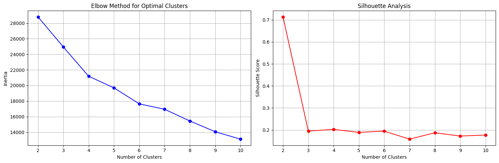
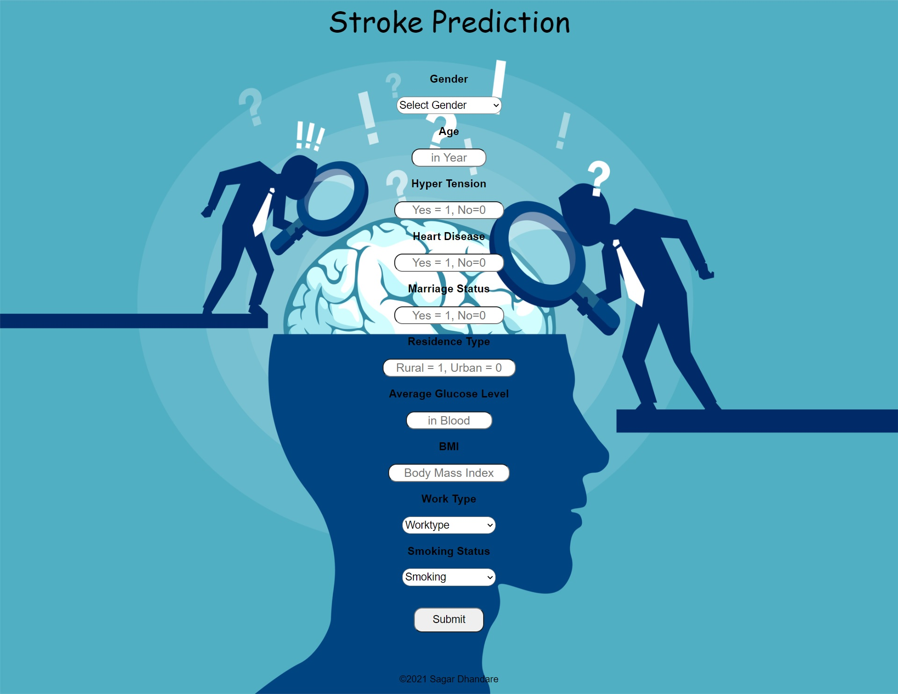
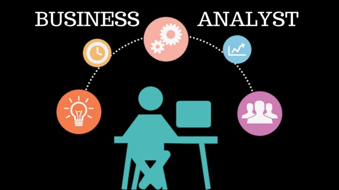
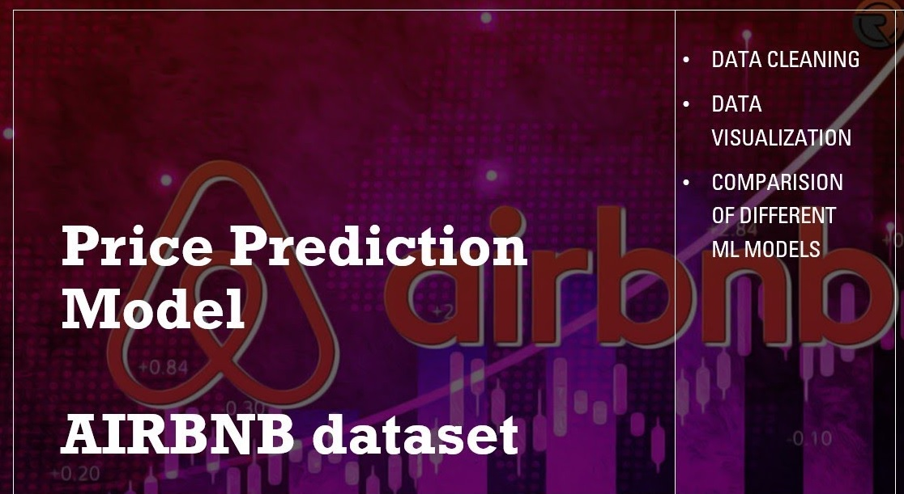
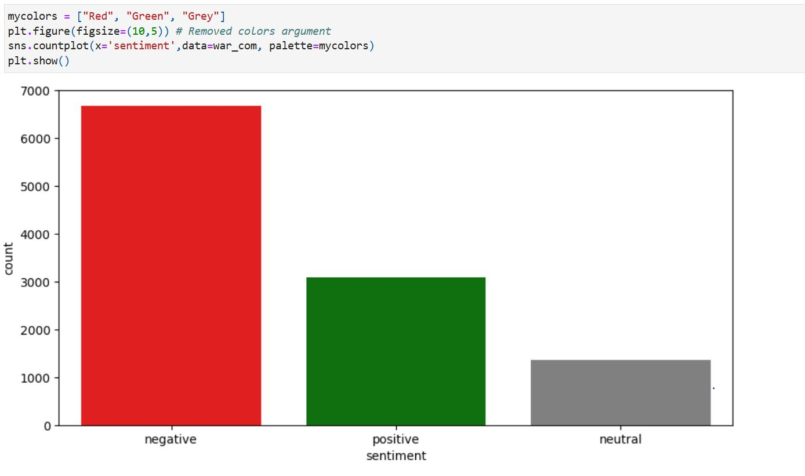
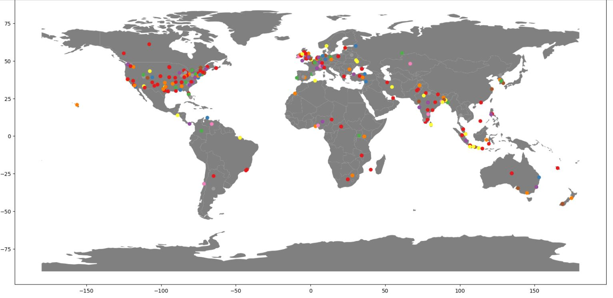
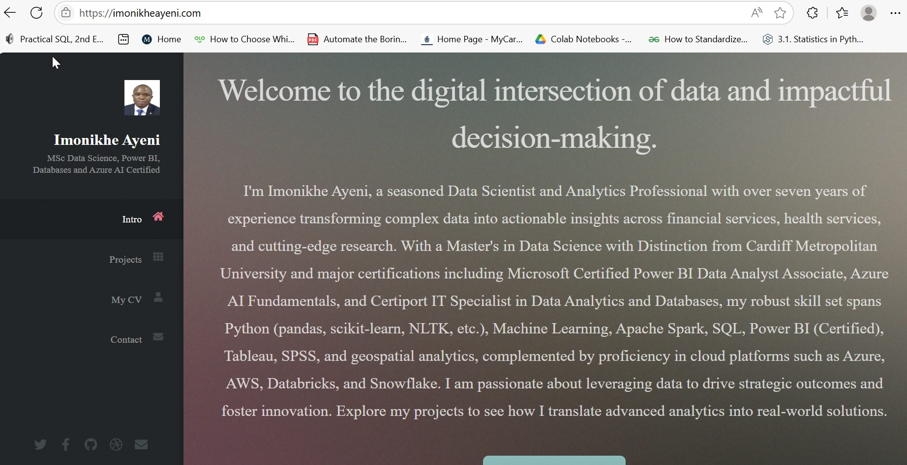
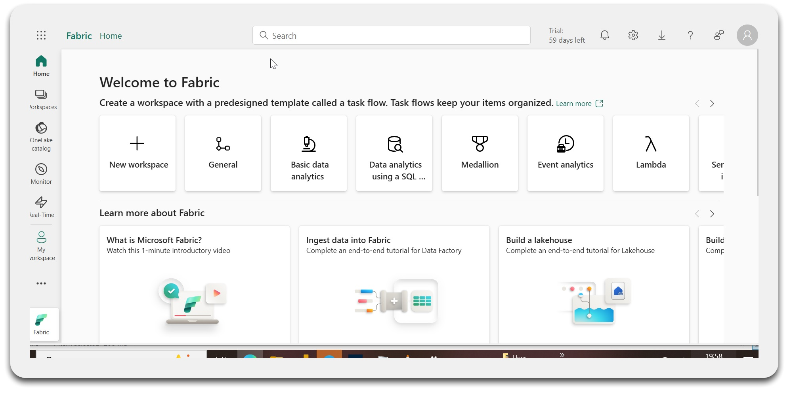

Healthcare analytics
CPES and U16CPES analysis, quality assurance, subgroup feasibility, response-rate reporting and patient-experience insight.

Principal Insight Analyst | Data Scientist | Healthcare Analytics
I am Imonikhe Ayeni, MBCS, AphA — a Principal Insight Analyst and Data Scientist with 7+ years of experience across healthcare, financial services and academic research. I specialise in healthcare analytics, machine learning, Power BI, Python, R, SQL and cloud data platforms including Azure, AWS, Databricks, Snowflake and Oracle.
I combine technical depth with stakeholder-focused communication, helping teams move from raw data to clear evidence, reliable reporting and better decisions.
CPES and U16CPES analysis, quality assurance, subgroup feasibility, response-rate reporting and patient-experience insight.
Predictive modelling, model comparison, classification, regression, clustering, NLP and deployment-ready analytical workflows.
Power BI, Tableau, KPI design, DAX, executive reporting, Excel automation and reproducible reporting pipelines.
Academic research analytics, statistical modelling, geospatial pipelines, qualitative analysis and publication-ready outputs.
Practical lessons for people building confidence in data analysis, programming and machine learning. I explain each topic as I would to a colleague: why it matters, how it works, where beginners often get stuck and what to practise next.
When I was learning, I found that many resources either moved too quickly or gave syntax without enough context. I created this library to provide a calmer route from the fundamentals to practical analysis.
Installation, core syntax, pandas, data cleaning, visualisation and a first machine-learning pipeline.
RStudio, tidyverse workflows, ggplot2, statistical testing and reproducible reporting.
SQL, statistics, machine learning, Power BI and generative AI will join the library over time.
A selection of machine learning, healthcare analytics, BI, cloud and research projects demonstrating end-to-end work: data sourcing, cleaning, modelling, evaluation, visualisation, reporting and deployment.

Applied K-Means clustering and PCA to the 2019 US Survey of Consumer Finances, segmenting credit-constrained households into two risk profiles (silhouette score 0.713).
Read case study
Developed and deployed a machine learning model for stroke-risk prediction, comparing algorithms and building a user-facing Flask application.
Read case study
Compared Microsoft and Apple volatility using GARCH and EGARCH models, validating volatility clustering, persistence and leverage effects.
View project
Built pricing models using Ridge Regression and Random Forest with feature engineering and exploratory analysis to understand rental price drivers.
View project
Used sentiment and economic analysis to explore how global events shape business, markets and public discourse.
View project
Mapped and analysed location-based patterns, showing how spatial data can uncover trends that support strategic decision-making.
View project
A practical cloud deployment guide showing how static websites can be hosted, configured and published on AWS S3.
View guide
A step-by-step guide for getting started with Microsoft Fabric using a personal email account.
View guide
A multimodal approach to smart healthcare analysis, connecting analytical modelling with practical healthcare insight.
View projectMy background spans national healthcare analytics, applied academic research, business intelligence and customer experience analytics.
Leading analytical delivery for CPES and U16CPES workstreams, including quality assurance, subgroup feasibility, reporting automation, geospatial analysis and stakeholder-focused insight.
Supporting national research projects through data engineering, machine learning, statistical modelling, visualisation, qualitative analysis and publication-ready reporting.
Delivered SQL, Python, dashboarding, segmentation, campaign analysis, A/B testing and predictive modelling to support revenue growth, risk analysis and operational decision-making.
Certified across machine learning, BI and cloud data platforms, with hands-on delivery experience in production-grade analytics and reporting environments.
I bring together healthcare analytics, data science, research delivery and business intelligence. My work focuses on reliable evidence, reproducible analysis and communication that helps technical and non-technical audiences act with confidence.
Open to professional conversations about healthcare analytics, research analytics, data science, BI dashboards, cloud analytics and collaborative projects.